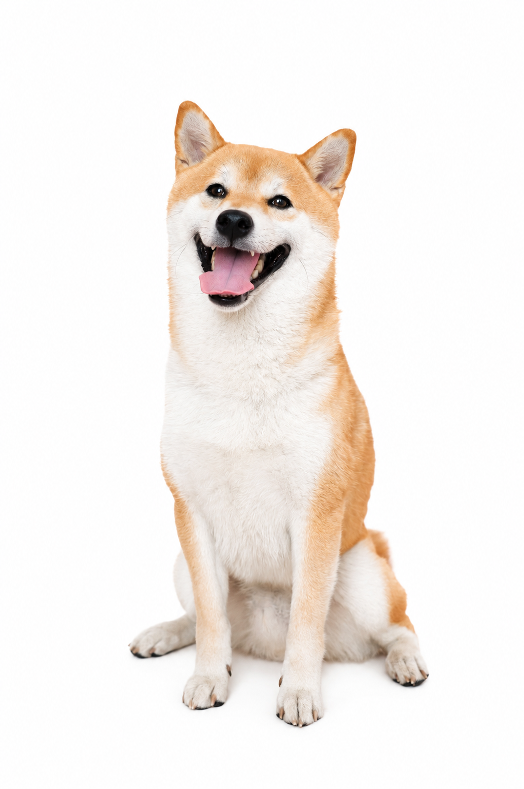
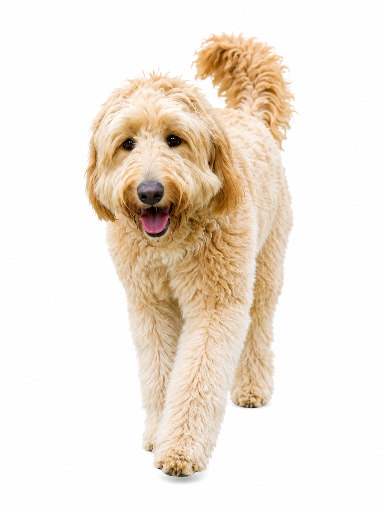

犬用コンディショナー・トリートメント
5商品を公開口コミ50件で比較
長毛・短毛・巻毛・毛玉・静電気・ふわふわ・しっとりなど、公開購入者レビュー50件を商品別に整理しました。
50公開口コミ
5比較商品
10件ずつ商品別DB収録
トイプードルポメラニアンゴールデンパピヨン
うちの子向け仕上げケアを見る →
飼い主たちの「実際どうだった？」を調査。
犬種・サイズ・毛質・性格から、
うちの子に近い体験を探せます。
同じ犬用品でも、犬の大きさや毛質によって使い心地は変わります。
 小型犬チワワ・ポメ・トイプーなど
小型犬チワワ・ポメ・トイプーなど
中型犬柴犬・コーギーなど
大型犬ゴールデン・大型ミックスなど商品スペックだけでは分からない、実際の飼い主体験まで調べます。
長毛・短毛・巻毛・毛玉・静電気・ふわふわ・しっとりなど、公開購入者レビュー50件を商品別に整理しました。
短毛・長毛・大型犬・シニアなど、香り・泡立ち・すすぎやすさ・仕上がりが分かる公開体験を整理しました。
ギロチン・ニッパー・ハサミ式を、怖がり・黒い爪・大型犬・初心者などの公開体験から比較しました。
怖がり・大型犬・黒い爪・太い爪など、犬の反応と削りやすさが分かる公開体験を整理しました。
全身・足裏・怖がり・シニア・多頭まで、犬の具体的な公開体験10件から「うちの子なら？」を比べます。
まずブラシTOPで4種類を横断して「うちの子には何タイプ？」を検索。さらに各専門記事では、その種類の中から商品候補TOP3を探せます。
公開口コミ100件以上＋Xも調査。犬種・年齢・性格・用途から、うちの子に合いやすい候補TOP3を探せます。
犬種が分かる公開体験を中心に25件整理。乾燥時間・音への反応・困った点まで比較しました。
「おすすめ○位」だけではなく、どんな犬が・どう使って・何が困ったかまで残します。
犬種・体重・毛質など、うちの子と比べられる情報を優先します。
音を怖がった、乾きにくかったなど、合わなかった体験も残します。
口コミにない情報を推測せず、「不明」のまま扱います。